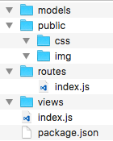

4.2.1 目录结构
我们停止 supervisor 并删除 myblog 目录从头来过。重新创建 myblog，运行 npm init，如下：

在 myblog 目录下创建以下目录及空文件（package.json 除外）：

对应文件及文件夹的用处：
models: 存放操作数据库的文件public: 存放静态文件文件，如样式、图片等routes: 存放路由文件views: 存放模板文件index.js: 程序主文件package.json: 存储项目名、描述、作者、依赖等等信息
小提示：不知读者发现了没有，我们遵循了 MVC（模型(model)－视图(view)－控制器(controller/route)） 的开发模式。
4.2.2 安装依赖模块
运行以下命令安装所需模块：
npm i config-lite connect-flash connect-mongo ejs express express-formidable express-session marked moment mongolass objectid-to-timestamp sha1 winston express-winston --save
对应模块的用处：
express: web 框架express-session: session 中间件connect-mongo: 将 session 存储于 mongodb，结合 express-session 使用connect-flash: 页面通知提示的中间件，基于 session 实现ejs: 模板express-formidable: 接收表单及文件的上传中间件config-lite: 读取配置文件marked: markdown 解析moment: 时间格式化mongolass: mongodb 驱动objectid-to-timestamp: 根据 ObjectId 生成时间戳sha1: sha1 加密，用于密码加密winston: 日志express-winston: 基于 winston 的用于 express 的日志中间件
后面会详细讲解这些模块的用处。
上一节：4.1 开发环境
下一节：4.3 配置文件